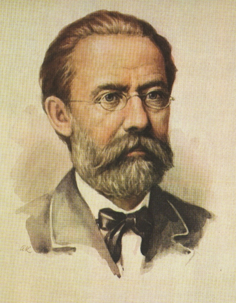

Bedřich Smetana
Život a díla
Český hudební skladatel, dirigent, klavírista a pedagog, syn zámecnického sládka se narodil 2.3. 1824 v Lytomyšli. Už jako roční dostal Bedřich housličky a otec ho sám učil. Později mu koupil klavír. Už v šesti letech hrál na svém prvním koncertě.
Ještě v době studií se stal domácím učitelem v rodině hraběte Thuna, vystupoval na koncertech a věnoval se komponování. Krátce před svadbou s Kateřinou Kolářovou v Praze roku 1848 otevřel soukromou hudební školu, kde sám vyučoval. Smetana neměl lehký život, musel překonávat kromě jiného finanční tíseň. Zemřela mu žena i tři z jeho dcer. Roku 1874 zcela ohluchl, přesto ale neustále skládal a díla z tohoto období patří k pokladům české hudby.
Z jeho děl jsou nejznámějsí opery, cyklus Vltava básní Má Vlast, skladby komorní, klavírní a množství polek.
Polka
- oblíbený tanec Bedřicha Smetany
- 2/4 takt
- vznik: okolí Hradce Králové
Opery
- BRAníboři v Čechách
- PROdaná nevěsta
- DAlibor
- LIbuše
- DVĚ vdovy
- HUbička
- TAjemství
- ČErtova stěna
- VIola - nedokončená
Národní divadlo
- 1868 - položen základní kámen
- 1881 - otevřené národní divadlo
- 1883 - znovuotevřené národní divadlo (protože předtím vyhořelo)
Dávám to sem proto, abyste věděli, že se při otevření/znovuotevření divadla hrála Libuše.